00全景与读法
D16（2026-06）记录过一个反常事实：DeepSeek 的 agent 能力已进旗舰主打，却没有自家 harness。两个月后问题关闭——2026-08-13，DeepSeek Harness（CLI 命令 dsh）v0.1 developer preview 与 V4-Pro-0813 GA 同日发布。它不是又一个终端 REPL：默认形态是本地 Web 应用，工程上是 TypeScript monorepo，理念上是"Everything is a plugin"——连 agent 主循环本身都是可替换插件。更重要的是它与模型发布同步的原因：V4 系公榜成绩全部在 dsh 的 minimal 模式下测得，harness 首先是官方评测环境，其次才是产品。
每一节固定三段：朴素基线（左栏，灰）——不看这份仓库、按直觉搭一个 agent runtime 会怎么做；它的做法（右栏，橙）——dsh 实际怎么做；差在哪（下方色块）——差异的实质、原文是否给了理由或证据、对 RL-on-NPU 的含义。数字按来源分三类：第三方 独立测量、审读或多方报道一致；自报 DeepSeek 或其他厂商口径；推断 本站分析。原文标注"（推断）"处全部保留。
贯穿全文的一条线索：benchmark 分数是"模型 × harness"的联合产物。dsh 的 minimal 模式实质复现 RL 训练分布，DeepSeek 把训练接口产品化开源；K3 走相反路线，用多 harness 白盒混训对冲过拟合。两条路线的优劣目前没有第三方统一协议的测量——这既是本篇的结论，也是它标出的领域缺陷。
01发布事实：D16 之问关闭
2026-08-13，dsh v0.1 developer preview 与 V4-Pro-0813 GA 同日发布（7 月为 closed beta）。定位：开源 agent runtime 框架，编程 agent 是主场景之一但非唯一，提供 full agent / code / minimal / creator 多种预设模式；默认形态是本地 Web 应用（npx @deepseek-ai/dsh web，监听 127.0.0.1:3080），同时提供 CLI 与 headless 一次性执行形态。工程形态：TypeScript monorepo（apps: cli/web；packages: core、llm、mcp、sandbox、context、plan、goal 等），MIT 许可，版本 0.1.0-rc.5，官方明言是会破坏兼容的开发者预览版（repo）。
热度：第三方 发布 90 分钟破 2.2 万 star、两天破 9 万、四天约 13.5–14.1 万（报道口径有出入），检索时点 177.1k star / 19.3k fork；发布 4 天社区插件（topic dsh-plugin）超 1,200 个；HN 主帖不足一天 734 分。与模型发布的同步不是偶然：自报 V4-Flash-0731 与 V4-Pro-0813 的公开 agent 基准（Terminal-Bench 2.1 87.9、CyberGym 83.3、DeepSWE 62.7 等）均声明在 DeepSeek Harness minimal 模式下测得。

这张图怎么读
要看的是层与层之间的箭头方向和插件层的成员构成。核心到插件层只有一条向下的箭头——核心不持有任何业务逻辑，只提供事件总线与生命周期管理；插件层的第七个成员是"agent 主循环本身也是可替换插件"，这一项是 dsh 区别于主流 harness 的关键：其他六项（模型适配器、工具注册表、MCP、沙箱、会话日志、规划）在别家框架中往往也可扩展，但主循环通常是不可替换的特权核心。
再看虚线：预设模式不是独立的一层，而是对插件层的一组配置。minimal 模式在这张图上只是"选择一组插件"的结果，但第 04 节会说明它同时是 V4 系公榜分数的产生位置——同一条虚线既是产品配置，也是评测口径。底部的三种形态中默认是 Web 应用而非终端 REPL，这与 Claude Code / Codex 的形态不同。
朴素基线
模型厂发布一个终端 REPL 形态的编程 agent，跟随模型发布节奏独立迭代；公榜成绩在通用 scaffold 或第三方 harness 下测得，harness 是模型能力的展示窗口。
它的做法
与 V4-Pro GA 同日发布；默认本地 Web 应用 + CLI + headless 三种形态；多预设模式而非单一编程 agent；自报 公榜成绩全部声明在 minimal 模式下测得，harness 先是官方评测环境，再是产品。版本 0.1.0-rc.5，官方明言会破坏兼容。
差在哪差异在于harness 与模型发布的绑定关系：dsh 不是模型能力的展示窗口，而是分数产生的环境。原文给出的证据是官方基准声明本身（minimal 模式），理由在第 04 节展开。star 曲线（第三方 四天约 14 万、检索时点 177.1k）反映关注度而非生产可用性，原文对此有明确限定。对 RL-on-NPU 的含义：一个以评测环境身份发布的开源 harness，天然是训练管线接口的公开版本——这一点决定了后续所有节的读法。
02架构：把 agent 循环本身做成插件
dsh 的核心理念是 "Everything is a plugin"，构建在名为 Cordis 的插件内核上（谱系源自聊天机器人框架 Koishi；DeepSeek 为其发布了 88 页论文《A Programming Paradigm for Spatiotemporal Composability》）。与主流 harness 的差异在于彻底性：模型适配器、工具注册表、会话日志、沙箱、权限策略、UI 是插件，agent 主循环本身也是插件——不存在不可替换的特权核心。
主循环与事件流。执行模型为 turn-based：一个 turn 包含多个 step（每 step = 一次模型请求及其工具调用），事件链为 turn/start → 组装 prompt → agent/pre-step → step 执行 → 工具调用 → agent/turn-stopping → turn/end，以 waterfall 事件链支持任意环节的可扩展拦截。subagent 通过 capability seam 实现：provider 可以是新起的子 agent，也可以是委托给另一产品的 turn，统一接口——与 Claude Code 的"子代理为独立实例、父会话收摘要"设计属同类抽象，但接口更泛化。
权限与沙箱。权限模型由四层组成：capability seam 可替换、agent 预设按会话配置能力集、插件监听 fs/*、tools/* 事件实施策略、ctx.sandbox 后端在进程 spawn 前包裹命令。对照 Claude Code 的五档权限模式（2026-08 起分类器批准的 auto 模式成为默认）与 Codex 的沙箱声明式配置，dsh 把权限做成了插件问题而非产品问题——灵活性更高，默认安全性依赖预设质量。
朴素基线
一个固定的 agent 主循环（读输入 → 调模型 → 执行工具 → 循环），在其周围以钩子或配置暴露扩展点：模型 provider 可换、工具可注册、权限为产品层的几档模式。主循环与权限逻辑属于不可替换的核心。
它的做法
无特权核心：Cordis 只提供事件总线与生命周期，主循环、权限策略、沙箱、会话日志、UI 全部为插件。subagent 走 capability seam，provider 可以是子 agent 也可以是另一产品的 turn。权限由四层插件机制构成，而非产品预置的几档模式。88 页论文为其理论基础。
差在哪差在"可扩展"与"可替换"的边界：基线把主循环当作产品的定义，dsh 把它当作可被换掉的一个插件。原文给出的理由是彻底性本身（不存在特权核心），并对代价有明确限定——默认安全性依赖预设质量。对 Cordis 理论，社区评价分歧：插件化工程被普遍认可，88 页论文则被批评"时空可组合性"缺乏实质新意（本质为依赖树自动化 + 注册/卸载管理），effect 可逆性的自动发现、逆操作构造与冲突解决等难题并未解决（第三方 评论）。对 RL-on-NPU 的含义见第 06 节第二点：主循环可替换意味着以插件组合实例化不同 harness 配置在工程上是可行路径。
03上下文管理：append-only 日志与投影
dsh 最受社区认可的设计是会话状态管理。三条原则：append-only SessionEvent 日志为唯一事实源，原则是 "model-visible means logged"——凡进入模型请求的内容必须可从日志重建；压缩即投影：deriveMessages() 从日志投影出模型消息历史，上下文压缩不是独立算法而是投影函数的参数——历史永不改写；checkpoint/fork：ctx.sessions.fork() 从任意日志位置分叉会话，原始 chunk 事件保留，支持精确回放。
| harness | 上下文策略 |
|---|---|
| dsh | append-only 日志 + 投影式压缩 + fork/精确回放 |
| Claude Code | 子代理隔离上下文（父会话收摘要）+ 压缩 |
| Codex | 增长式 JSON prompt，推理 trace 经 Responses API 跨轮传递（强依赖服务端连续性） |
| OpenClaw | 主动式管理：分页、索引、剪枝 + Markdown/SQLite 记忆层 |
| Hermes | 压缩产生 lineage 而非改写历史（与 dsh 理念接近） |
朴素基线
会话状态即消息数组；上下文超限时运行一个压缩算法，用摘要替换旧消息，数组被原地改写。要回放某一步，只能从当前状态近似重建；分叉会话需要复制整个数组。
它的做法
事实源是 append-only 的 SessionEvent 日志，消息数组只是 deriveMessages() 的投影结果；压缩是投影函数的参数，历史永不改写；ctx.sessions.fork() 从任意日志位置分叉，原始 chunk 事件保留，回放精确。"model-visible means logged"保证凡模型看过的内容都可重建。
差在哪差在事实源的位置：基线的事实源是可变的消息数组，dsh 的事实源是不可变日志，消息只是派生视图。原文给出的理由是可重建性与精确回放；第三方 HN 社区把透明日志视为对闭源 harness 的最大差异点。对本看板的含义在第 06 节：append-only 全透明日志正是 RL 轨迹采集的理想接口——rollout 轨迹、工具调用、失败路径全部可重建。原文的判断是：这一设计与其说面向用户，不如说面向训练管线。
04Model + Harness = Agent：协同设计的两面
官方口号 "Model + Harness = Agent" 直接声明了协同设计：harness 采集的推理轨迹、规划失败与工具效率数据回流用于后续模型微调；模型的 tool-call 格式与 prompt 分布则固化进 harness。两个具体证据：
其一，minimal 模式即训练分布。自报 V4 系公榜成绩均在 minimal 模式下测得，官方同时警告换 harness 结果会不同；第三方 第三方审读指出 minimal 模式实质是复现 RL 训练时的 prompt 与 tool-schema 分布（讨论）。即：公榜分数 = 模型在其训练接口上的表现，harness 是分数的一部分。
其二，DSML 格式。V4 系模型底层 token 格式为 DSML（<｜DSML｜> 系 XML 式语法，以 string="true|false" 区分字符串与结构化参数，规避 JSON-in-string 的转义失败）。生态摩擦真实存在：OpenCode 无法解析 DSML（issue #24566）、SGLang 解析器偶发丢标记（issue #14695）；且 DSML 未进入官方 tool-use 文档（对外接口仍是 JSON function calling）。tool-call 格式正在成为模型厂的训练层差异化手段。
同时须注意双线策略：V4-Flash-0731 原生支持 Responses API 并专门适配 Codex——DeepSeek 在"自家 harness"与"他家 harness 兼容"两条线同时投入，dsh 的 ctx.llm adapter 层也不锁定自家模型（内置 Anthropic/OpenAI/Bedrock/Vertex 等 provider）。

这张图怎么读
先看闭环上标注"公榜分数产生于此"的那条边：它从 minimal 模式指回 harness，说明评测环节不在闭环之外，而是闭环的一段。数据从 harness 流向模型（回流微调），格式从模型流向 harness（DSML 与 prompt 分布固化），两个方向合起来才是 "Model + Harness = Agent" 的完整含义——分数是这个环转一圈后的读数。
再看从模型节点出发的虚线：它指向接口摩擦，而非指向闭环内的任何节点。这表示摩擦发生在闭环之外——第三方 harness（OpenCode）、第三方推理引擎（SGLang 解析器）与对外文档（DSML 未收录）。摩擦的存在反过来证明训练层格式确实与产品层接口分离。最后看"双线策略"：它以虚线接入模型节点，说明 DeepSeek 并未把模型锁定在自家闭环内，V4-Flash 同时适配 Codex 的 Responses API。
朴素基线
模型与 harness 是两个独立产品：模型以通用 JSON function calling 对外，harness 是任何兼容 OpenAI 接口的客户端；公榜成绩在标准 scaffold 下测得，与用户使用的 harness 无关。
它的做法
协同设计：harness 采集数据回流微调，模型的 DSML 格式与 prompt 分布固化进 harness；自报 公榜分数只在 minimal 模式下报并明示换 harness 会变；底层 DSML 与对外 JSON function calling 并存；第三方 OpenCode、SGLang 两处解析问题公开可查。同时以 Responses API 适配 Codex，adapter 层不锁定自家模型。
差在哪差在训练接口是否对外可见：基线假定模型的对外接口就是训练接口，dsh 的存在说明两者可以分离——训练层是 DSML 与 minimal 模式，对外层是 JSON function calling。原文给出的证据是官方声明与第三方审读的一致（minimal 模式复现训练分布）以及两个公开 issue；DSML 细节来自第三方解析器与社区报告而非官方文档，原文声明中有此限定。含义：tool-call 格式正在成为模型厂的训练层差异化手段，任何在 NPU 上部署 V4 系模型做 rollout 的团队都会直接遇到解析器兼容问题（SGLang issue #14695 是现成案例）。
05harness 即分数：两条防过拟合路线
本次调研确立的分析框架来自一组测量证据：benchmark 分数是"模型 × harness"的联合产物。第三方 同一 Claude Opus 4.5，SWE-bench Pro 标准化 scaffold 下 45.9%，Claude Code 下 55.4%——9.5pt 分差（数据）；arXiv 论文《Stop Comparing LLM Agents Without Disclosing the Harness》（2605.23950）系统论证该问题：harness 几乎从不披露也不受控，SWE-bench Verified 上纯 scaffold 差异可达约 15pt；极端案例：同一模型仅改 scaffolding 从 42% 到 78%（案例）；DeepSeek 本身即最新例证：官方只在 minimal 模式下报分并明示换 harness 分数会变。
在此背景下，头部厂商对"harness 过拟合"的应对分裂为两条路线：
| Kimi K3 | DeepSeek | |
|---|---|---|
| 策略 | 多 harness 白盒混训：统一白盒 RL 环境可实例化 Kimi Code / Claude Code / Codex / OpenClaw / Hermes，训练时动态混合配置（D24 §7） | 单一接口 + 产品化：单一 RL 训练接口，再把该接口以 dsh 开源，使训练分布成为公开产品 |
| 逻辑 | 训练时见过多种 harness，部署到任意 harness 均稳 | 让全世界使用与训练分布一致的 harness |
| 代价 | 环境工程复杂度高 | 接口敏感性成为公开承认的弱点（第三方 harness 下分数不保证） |

这张图怎么读
先看顶部证据节点里三个数字的量级排列：9.5pt → 约 15pt → 36pt。第一个是同一模型（Opus 4.5）在两个具名 harness 下的精确对比，第二个是论文对 SWE-bench Verified 上纯 scaffold 差异的系统估计，第三个是单一极端案例（42 到 78）。三个数字的可信度依次下降、幅度依次上升——读这张图时应以前两个为主要依据，第三个作为上界参考。
再看两条路线的结构对称性：都是两步（K3：统一白盒环境 → 动态混合配置；DeepSeek：单一训练接口 → 开源为 dsh），但方向相反——K3 让模型在训练时见过多样性，DeepSeek 让部署环境收敛到训练分布。最值得看的是底部：两条实线路线到判定节点用的是虚线，表示目前没有任何实证把它们连起来。这个空缺正是 2605.23950 所说的领域缺陷，也是"下一步看什么"第三项。
朴素基线
benchmark 分数衡量模型能力；harness 是实现细节，不同 harness 下的分数可以直接比较；防过拟合的办法是扩大训练数据的多样性。
它的做法
承认分数是模型 × harness 的联合产物，只在自家 minimal 模式下报分并明示换 harness 会变；防过拟合的办法不是让模型见更多 harness（K3 路线），而是让世界使用与训练分布一致的 harness——把训练接口开源为产品。代价是接口敏感性成为公开承认的弱点。
差在哪差在对"分数"这个量的定义：基线把 harness 视为噪声，dsh 路线把它视为分数的组成部分并公开承认。原文的证据来自三个独立来源（第三方 bswen 数据、2605.23950 论文、particula 案例）加 DeepSeek 自身的官方声明；原文明确指出两条路线的优劣缺乏第三方统一协议测量。对 RL-on-NPU 的含义：任何在国产栈上做 agentic RL 并报分的团队，都面临同一个选择——训练接口收窄还是多 harness 混训——且目前没有实证告诉你哪条更优。
06成熟度评价与对 RL-on-NPU 的含义
成熟度。预览版的问题清单：README 文档单薄、构建后体积 1.4–1.5GB、实测任务完成可靠性不稳定（第三方 实测：三次声明完成仅一次可用）。star 曲线反映的是关注度而非生产可用性，当前阶段的合理定位是"现象级预览版"。
对本看板的三点含义：
append-only 日志 × RL 轨迹采集
dsh 的会话日志设计与 rLLM 的 Model Gateway 捕 logprob（D22）、K3 的 partial rollout 轨迹管理（D24 §7）属同一问题域——agent 轨迹的完整可重建性是 agentic RL 的数据基础。dsh 把它做成了开源 runtime 的默认属性，任何团队可直接以 dsh 采集带完整工具调用链的训练轨迹（推断 这可能正是其设计动机之一）。
可配置 harness 底座
K3 的统一白盒 RL 环境（可实例化多家 harness）目前未开源；dsh 的"一切皆插件"架构恰好提供了同类能力的开源实现路径——以插件组合实例化不同 harness 配置做多样化 RL 训练，是 dsh 之上可直接开展的工作（推断）。
执行底座对照
V4 技术报告披露的 DSec 弹性计算（function call / 容器 / microVM / VM 四种执行底座、3FS 分层镜像、可抢占轨迹重放）与 K3 的 AgentENV（Firecracker microVM，D24 §7）构成 agent 沙箱基建的两个公开参考；dsh 的 sandbox seam 是其产品端接口。昇腾侧沙箱基建（D13 四问题之一）可直接借鉴该三层结构。
朴素基线
用一个成熟的闭源或半开源 harness 跑任务，训练轨迹靠在推理引擎侧打日志或写 wrapper 拼接；多 harness 训练环境需要自研；沙箱基建照抄容器方案。
它的做法
dsh 本身的成熟度处于预览版（文档单薄、1.4–1.5GB、三次完成一次可用），但其三个属性对训练管线有直接价值：日志默认可重建带工具链的轨迹；插件组合可实例化不同 harness 配置（K3 同类能力未开源）；sandbox seam 对接 DSec 四种执行底座 / 3FS 分层镜像 / 可抢占轨迹重放的三层结构。
差在哪差在评价维度：作为产品，dsh 当前不如基线可靠；作为训练基建的接口，dsh 提供了基线不具备的三种能力。原文对成熟度的判断有第三方实测支撑，对三点含义中的两点明确标注为推断。对 RL-on-NPU 的含义是分层的：轨迹采集（可立即用）、多 harness 底座（可开展的工作）、沙箱三层结构（可借鉴的设计），三者与 D13 四问题、D22 Model Gateway、D24 §7 逐一对应。
07跟进（2026-09-01）：对照 Prime Agent
Prime Intellect 于 08-05 开源的 Prime Agent（MIT，arXiv 2608.23552）为本篇的分析框架提供了另一极。两者同为 harness、同以轨迹回流训练栈为商业逻辑，但设计哲学相反。
第一，状态中心。dsh 以 append-only 日志为状态中心（压缩 = 投影、精确回放、minimal 模式复现训练分布），为可审计与训推一致优化；Prime Agent 以持久 IPython kernel 为状态中心（RLM：上下文即变量、sub-agent 即 rlm() 函数调用），为长任务 token 效率优化，代价是回放困难。第二，自改进。dsh 的插件由开发者替换，Prime Agent 把 prompt / 技能 / 记忆开放给 agent 自身 CRUD——评测口径因此随自改漂移。第三，防过拟合路线相反。dsh 用"收窄"（单接口 + minimal 模式）保证分数可信，Prime Agent 用"增强"证明 harness 是能力放大器（自报 搭配 Opus 5 在 ARC-AGI-3 得 95.5%、九项长上下文六胜 Claude Code）。两个结果合起来构成"harness 即分数"的完整论证：harness 既定义分数口径，也改变分数本身。Prime Agent 明确不做沙箱，与 D35 记录的"每 agent 一沙箱"生产共识相悖。
朴素基线
两个开源 harness 若商业逻辑相同（轨迹回流训练），设计上应趋同：都记录日志、都支持子 agent、都沙箱化执行、都由开发者配置。
它的做法
dsh 与 Prime Agent 在三个维度上取相反极：日志中心 vs kernel 中心；开发者替换插件 vs agent 自身 CRUD；收窄口径保证可信 vs 增强能力放大分数。Prime Agent 不做沙箱。自报 Prime Agent + Opus 5 ARC-AGI-3 95.5%、九项长上下文六胜 Claude Code。
本站判断Prime Agent 的价值在于把"harness 即分数"从单向命题补成双向：dsh 证明 harness 定义分数口径，Prime Agent 证明 harness 改变分数本身。两者的商业逻辑相同（轨迹回流训练栈），说明 harness 作为训练数据入口已是行业共识，分歧只在状态表示与口径控制。对 RL-on-NPU 的含义：若目标是可审计、可回放的训练轨迹，dsh 路线的日志中心设计更直接；Prime Agent 的自改进与无沙箱设计会让评测口径漂移，与 D35 的生产共识相悖，采集训练数据时需额外控制。
08总表：朴素基线 vs dsh 的做法
| 维度 | 朴素基线 | dsh 的做法 · 差在哪 |
|---|---|---|
| 发布方式 | 独立于模型的终端 REPL 产品 | 与 V4-Pro GA 同日发布，默认本地 Web 应用 + CLI + headless；公榜成绩全部在 minimal 模式下测得。harness 先是评测环境 |
| 内核架构 | 固定主循环 + 周边扩展点 | Cordis 无特权核心，agent 主循环本身是插件；subagent 走 capability seam。88 页论文的理论新意受第三方质疑 |
| 权限模型 | 产品预置几档模式 | 四层插件机制（seam / 预设 / fs·tools 事件 / ctx.sandbox）。灵活性更高，默认安全依赖预设质量 |
| 上下文管理 | 可变消息数组 + 原地压缩 | append-only 日志为事实源，压缩即投影，fork 与精确回放。HN 视为对闭源 harness 的最大差异点 |
| 模型与 harness 关系 | 两个独立产品，通用 JSON 接口 | 协同设计：轨迹回流微调、DSML 与 prompt 分布固化；对外仍 JSON function calling。OpenCode / SGLang 解析摩擦公开可查 |
| 防过拟合 | 扩大训练数据多样性 | 单接口 + 产品化开源训练分布（对照 K3 多 harness 混训）。两条路线优劣无第三方统一协议测量 |
| 成熟度 | — | 预览版：文档单薄、1.4–1.5GB、三次完成一次可用；star 曲线是关注度而非生产可用性 |
| 对 RL 基建 | 推理侧打日志、自研多 harness 环境、容器沙箱 | 日志默认可重建工具链轨迹；插件组合实例化 harness 配置（推断）；DSec 四底座 / 3FS / 可抢占重放三层结构可借鉴 |
| 对照 Prime Agent | 同商业逻辑应趋同 | 日志中心 vs kernel 中心；开发者替换 vs agent 自改；收窄 vs 增强；有沙箱 vs 无沙箱 |
09原文没给的东西
以下是复现或引用时必须自行确认、原文未给出理由或未经独立复现的内容：
- minimal 模式的具体 prompt 与 tool-schema——"复现 RL 训练分布"是第三方审读的推断，官方只声明公榜在该模式下测得并警告换 harness 结果会变，未公开训练接口与 minimal 模式的逐项对应；
- DSML 语法的官方定义——细节全部来自第三方解析器与社区报告，DSML 未进入官方 tool-use 文档；
- Cordis 论文的实质贡献——88 页论文被第三方批评缺乏新意，原文未独立评估其理论主张，effect 可逆性等难题是否有解决方案未核实；
- 轨迹回流微调的实际数据流——"harness 采集的数据回流用于后续模型微调"是官方口号层面的声明，采集范围、频率与是否默认上传均未披露；
- star 数与插件数——四天 13.5–14.1 万的报道口径有出入，177.1k / 19.3k / 1,200+ 均为检索时点快照，随时间快速变化；
- 可靠性实测的样本量——"三次声明完成仅一次可用"来自单一第三方实测，样本极小；
- Prime Agent 的 ARC-AGI-3 95.5% 与九项长上下文六胜 Claude Code——作者自报，无独立复现；
- 两条防过拟合路线的实证对比——目前不存在第三方统一协议下的跨 harness 测量；
- 本篇原图：dsh 与 Prime Agent 仓库 README 均不含架构图（仅 logo、徽章与社群二维码），故全部使用本站图。
10判断与下一步
一、报分时必须声明 harness。同一模型跨 harness 分差 9.5pt 是精确测量、约 15pt 是系统估计、36pt 是上界案例；DeepSeek 只在 minimal 模式下报分并明示换 harness 会变，是头部厂商对该事实的正式承认。任何 agentic RL 结果若不披露 harness，其分数不可与他人比较。
二、append-only 日志是训练轨迹采集的正确接口形态。"model-visible means logged"保证凡模型看过的内容都可重建，压缩不改写历史，fork 支持精确回放——这三条恰是 agentic RL 数据基础的要求（与 D22 的 Model Gateway 捕 logprob、D24 §7 的 partial rollout 管理同属一域）。以 dsh 采集带完整工具调用链的轨迹是可立即开展的工作。
三、"收窄"与"混训"是同一问题的两个解，目前无人测过哪个更优。DeepSeek 把训练接口开源为产品、K3 让模型在训练时见过五家 harness；dsh 的插件架构恰好提供了实例化多 harness 配置的开源路径（推断）。谁先做出第三方统一协议的跨 harness 测量，谁定义评测标准。
v0.1 → 稳定版的演进速度：文档、体积与可靠性问题的收敛节奏，决定 dsh 是产品还是训练基建的副产品 · DSML 是否进入官方对外文档：tool-call 格式之争（DSML vs JSON function calling vs Responses）的标准化走向 · 第三方统一协议的跨 harness 测量：K3 混训与 DeepSeek 单接口两条路线的实证对比 · dsh 插件生态与 RL 工具链的交叉：社区是否出现基于 dsh 的轨迹采集 / RL 环境插件。